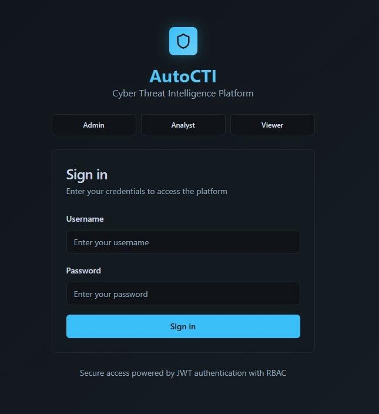
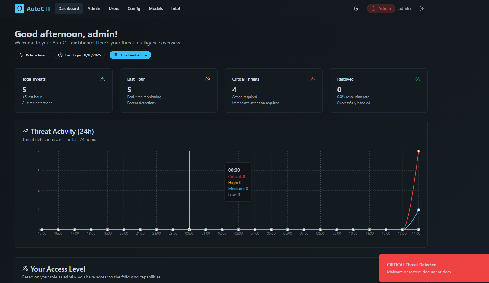

Automated Cyber Threat Detection using AutoML
A real-time cybersecurity system that detects and blocks threats from platforms like WhatsApp, Gmail, and browsers using AutoML algorithms and a background Chrome Extension.
With attackers increasingly leveraging chat apps like WhatsApp, email systems like Gmail, and web applications to distribute malicious links, traditional security methods fall short.
AutoCTI acts as an active shield. It monitors network requests in the background, intercepting link clicks from any web source. Instead of relying on signature-based static rule databases (which fail against new domains), AutoCTI uses machine learning pipelines to detect anomalies dynamically.
Traditional firewalls and antivirus packages struggle with URL-based social engineering and zero-day malicious domains. AutoCTI uses Automated Machine Learning to adapt to new threat behaviors without waiting for manual library updates.
| Feature | 🛡️ Traditional Antivirus | 🧠 AutoCTI Solution |
|---|---|---|
| Primary Approach | Static / Signature-based library checks | Dynamic / Machine Learning anomaly detection |
| Zero-Day Threats | ❌ Cannot detect unknown threats | ✅ Identifies new anomalies autonomously |
| Adaptability | ❌ Relies on manual, scheduled database updates | ✅ Adapts on-the-fly via AutoML retraining |
| Focus Area | 💻 Offline File system & executable binaries | 🌐 Web links, chat app traffic, and live URLs |
Instantaneous analysis of clicked links from WhatsApp Web, Gmail, or standard web browsers.
Utilizes H2O.ai & Auto-sklearn to automatically run and select high-precision models.
Manifest V3 extension monitors browser activities silently in the background.
A comprehensive React dashboard to visualize active logs, threats, and severity metrics.
Neutralizes threats immediately on the client side before the user's browser loads the page.
Triages threat vectors into Low (🟢), Medium (🟡), and Critical (🔴) classification pools.
AutoCTI integrates a Chrome Extension client with a FastAPI server to run real-time AutoML classification.
Open Google Chrome and navigate to chrome://extensions/. Toggle **Developer Mode** ON, click
**Load unpacked**, and select the backend/autocti_chrome_ext directory.


Phishing detection models training and background Chrome Extension (Manifest V3) integration.
Real-time React dashboard console displaying logs, metrics, and threat tracking indexes.
Behavior-based script sandboxing and file payload classification using AutoML (In progress).
Dockerizing system components and provisioning AWS/GCP pipelines for cloud hosting.
Integrating XAI tools to explain specific model decisions for blocked URLs to operators.
Continuous model retraining feeds to automatically ingest new threat feeds without shutdowns.
Check out the full open-source codebase on GitHub or reach out to discuss machine learning integrations.